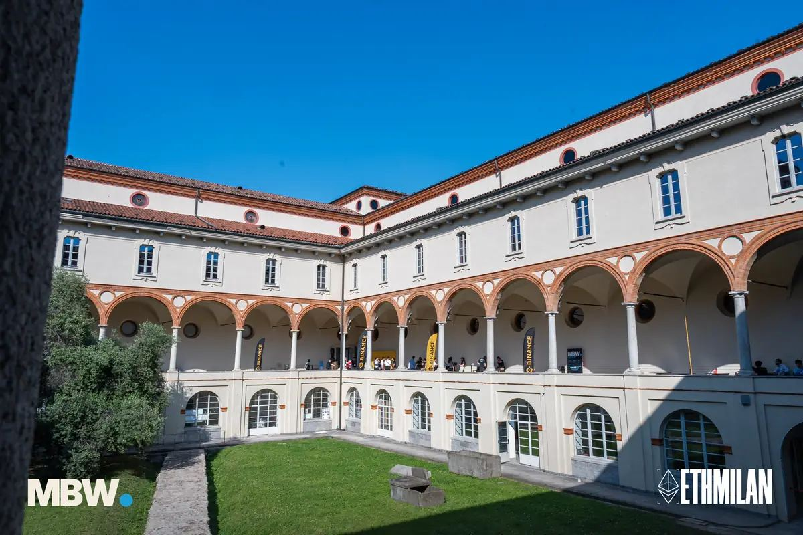

Conferences · Crypto / Web3
Milano Blockchain Week 2027
- Dates
- –
- Venue
- Museo della Scienza e della Tecnologia Leonardo da Vinci, Via San Vittore 21, Milan
- Location
- Milan, Italy
- Format
- In-person
- Category
- Crypto / Web3
- Industry
- Crypto
- Official website
- https://milanoblockchainweek.com/
About
Dates are local to the host city (Central European Time, UTC+1 / UTC+2 in summer).
Topics: blockchain, Web3.
No organiser attendance figure found on the official pages fetched 24 Nov 2026. Ranked by our estimated size tier 'medium' (10,000-30,000 attendees/visits), a judgement from format, venue and scale, not an official number.
Sources
- Official — https://milanoblockchainweek.com/
Hotels
- MAGNA PARS L'HOTEL A' PARFUM — 5★ · Via Vincenzo Forcella 6, 20144 Milano · 1.1 km from the venue · Price on request
- Palazzo Cordusio a Gran Meliã Hotel — 5★ · PIAZZA CORDUSIO 2, 20123 Milano · 1.3 km from the venue · Price on request
- Pierre Milano — 5★ · via Edmondo De Amicis 32, 20123 Milano · 0.6 km from the venue · Price on request
- Mercure Milano Solari — 4★ · via Pietro Orseolo 1, 20144 Milano · 0.6 km from the venue · Price on request
- Regina — 4★ · via Cesare Correnti 13, 20123 Milano · 0.8 km from the venue · Price on request
Venue
- Museo Nazionale della Scienza e della Tecnologia Leonardo da Vinci — Venue · Via San Vittore 21, Milan